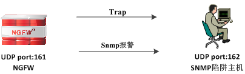
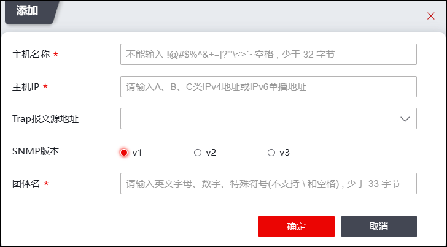

陷阱主机是指接收NGFW发出的SNMP Trap消息/告警消息的主机。根据其使用的SNMP版本不同，可接收的消息类型有所不同：SNMPv1和SNMPv3的陷阱主机只支持接收Trap消息，SNMPv2c的陷阱主机可同时接收Trap消息和SNMP告警消息。NGFW主动向陷阱主机发送Trap消息及告警消息的过程如下所示。

| l | 报警消息：通过设备的流量触发SNMP告警规则时，NGFW会自动以SNMP告警方式向陷阱主机发送告警信息。关于告警规则及告警方式的配置具体请参加 告警。 |
| l | Trap消息：NGFW主动发送给陷阱主机表明系统出现异常的信息，以提醒网络管理员设备已出现异常。NGFW支持预定义TRAP事件，关于TRAP事件的设置具体请参见 告警。 |
在陷阱主机上安装SNMP管理软件并导入公有MIB库或TOPSEC MIB库后，还需要在NGFW上添加陷阱主机信息，网络管理员才能接收NGFW主动发送的Trap消息及SNMP报警消息。
在NGFW上添加陷阱主机的具体操作如下。
| 步骤1 | 选择 Trap主机。 |
| 步骤2 | 添加Trap主机。点击“添加”，弹出窗口界面如下图所示。 |

在添加Trap主机时，各项参数的具体说明如下表所示。
参数 |
说明 |
|---|---|
用户名称 |
设置陷阱主机的名称。 |
主机IP |
设置陷阱主机的IP地址。 |
Trap报文源地址 |
可选项，仅主机IP为IPV4时支持配置Trap报文源地址，点击下拉框可选择源接口，Trap报文通过选择的源接口发送。若配置独立管理口，则使用独立管理口发送Trap，而不通过设置的Trap源地址发送。 |
SNMP版本 |
选择SNMP版本，可选择：v1、v2、v3。 |
团体名 |
输入SNMPv1/SNMPv2陷阱主机连接NGFW时的团体名。 |
远端引擎ID |
输入SNMPv3的陷阱主机远端引擎ID。 |
V3用户 |
SNMP版本选择“v3”时，需选择指定的V3用户。 |
| 步骤3 | 点击【确定】按钮完成陷阱主机对象的添加。 |